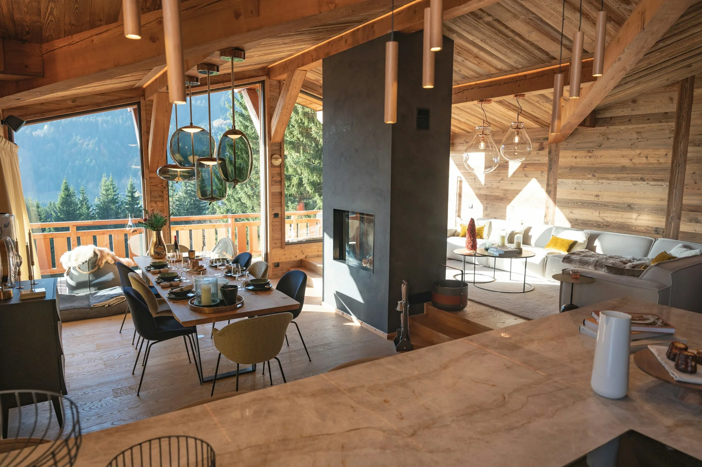

01 / Place
Somewhere
that feels like you.
A beautiful property is only the beginning.
We consider how you will actually live in it. The space to be together, the room to withdraw, and what lies beyond the front door.